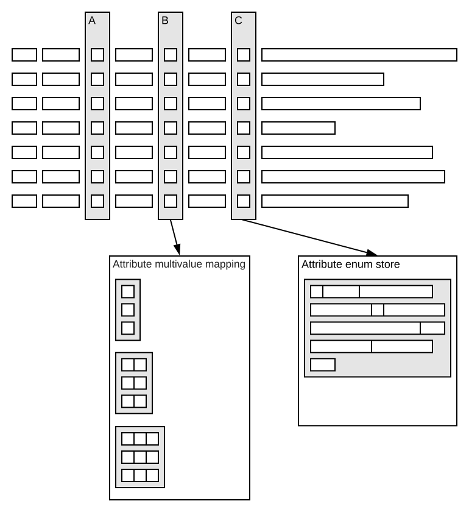

Attributes are in-memory structures for fields:

Attributes can be:
| Single-valued, fixed size | Like the "A" attribute, example a 32 bit integer attribute. The element size is the size of the type, like 8 bit for a byte. A memory buffer holding all values in an array. |
|---|---|
| Multi-valued, fixed/variable size | Like the "B" attribute, example array of integer. A memory buffer holding references (32 bit) to a memory structure with objects for each size class. |
| Single-valued, variable size | Like the "C" attribute, example string. One large memory buffer holding references (32 bit) to a memory structure with objects per unique value. |
Use attribute when the field is used in:
attribute is a keyword in schemas, specifying the indexing for a document field - see the indexing language.
Attributes speed up query execution and document updates, trading off memory. As data structures are regularly optimized, consider both static and temporary resource usage - refer to the attribute sizing guide.
Use attributes in document summaries to limit accesses to storage to generate result sets.
Using attribute for a field means query matching works on memory structures only. An attribute is a linear array-like data structure - matching documents means scanning all attribute values. Setting fast-search generates a B-tree index structure for quicker lookup, using more memory, and more CPU when updating. See when to use fast-search.
fast-access locks all replicas of the attribute in memory. See sizing feeding for details.
Attribute data can consume a lot of memory, especially when using fast-access, where not ready copies are brought into memory. Please see attribute memory usage sizing.